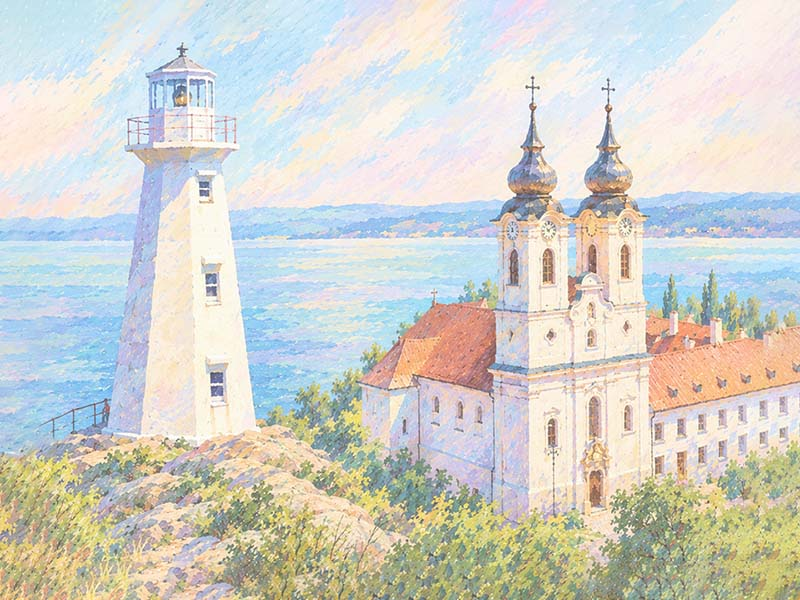

A Trans Europe Ultra az európai kontinens legkeményebb, határokon átívelő, önellátó kerékpáros ultraversenye, amely az Atlanti-óceán partján fekvő Portótól (PRT) köti össze a mezőnyt a festői magyarországi Tihannyal (HUN). A résztvevők 12 országon keresztül, embert próbáló hegyvidékeken és történelmi régiókon át küzdenek meg az elemekkel és önmaguk határaival egy egyedülálló nemzetközi mezőnyben.

A Trans-Canada Ultra a világ legnehezebb és leghosszabb önellátó kerékpáros ultraversenye. A mezőny a kanadai Yukon tartománybeli Whitehorse-ból indul, és egy emberpróbáló, 12.790 kilométeres útvonalat teljesítve éri el a célt: Újfundlandon, St. John’s közelében a Cape Spear világítótornyot.
Ezt a kihívást folytatja a TRANS EUROPE ULTRA a portugál felfedezők nyomdokain: a portói világítótoronytól indulva, 12 ország legmagasabb szakaszain át vezet az út a magyarországi Tihanyi Bencés Apátságig.
Amikor 1504-ben a portugál tengerészek feltérképezték Újfundland partjait, a mai St. John’s vidékét Terra de Bacalhaos néven jegyezték fel. Az utazás szellemi ívét a bencés örökség keretezi: Portóban a történelmi São Bento kolostorok őrzik a rend atlanti-óceáni jelenlétét, míg a célvonal a Tihanyi Bencés Apátságnál várja a célba érkezőket („Ora et labora”).
Balla István 2026-ban hatalmas sikerrel hódította meg a Trans-Canada Ultra csúcsait, és idén ennek a mérföldkőnek a közvetlen folytatásaként a Trans Europe Ultra - Part I elnevezésű, gigantikus északi-félgömb ultraverseny első európai szakaszának teljesítésére készül.
E történelmi európai vándorlás életre hívásához és sikeres megvalósításához 2027-es évre elhivatott támogatókat, partnereket keresünk, akik országonkénti és szakaszonkénti javaslatokkal, valamint anyagi támogatással tudják segíteni ezt a rendkívüli ultraversenyt és a résztvevőket.
A 2027-es versenyévben terveink szerint egy útvonalbejáró verseny veszi kezdetét, ami már a résztvevők számától függően részt vesz a hároméves versenyciklus szimbolikus díjazásában.
Rajt:
Porto (PRT), Mosteiro de São Bento da Vitória & Farol de Felgueiras
Cél:
Tihany (HUN), Bencés Apátság
Főbb adatok:
Időpontok:
A rajt a nyári napforduló és Szent János napja köré fonódik, amikor Porto lakói a Douro folyón ünneplnek.
TransCanada, atlanti átkelés és a Porto–Tihany útvonal ellenőrzőpontjai.
Hiszünk abban, hogy a világ legnehezebb ultraversenyeinek szellemisége és azok európai folytatása nyitott, értő fülekre talál mindazok körében, akik osztoznak a megalkuvást nem ismerő kitartás eszményében.
Célunk a Trans Europe Ultra (Part I) elindításával egy olyan nemzetközi mozgalom megteremtése, amely átlépi a határokat, és az Atlanti-óceántól egészen a Kárpátokig összeköti az ultrakerékpározás és a szabadságot kereső bikepacking közösségét.
Meggyőződésünk, hogy egy ilyen gigantikus projekt nem csupán egyéni küzdelem, hanem közös ügy. Ezért keressük a helyi közösségek és a nemzetközi partnerek együttműködését, valamint mindazok támogatását, akik egy határokon átívelő európai hálózat részeként szeretnének történelmet írni ebben a sportágban.
A verseny előkészítését jelenleg önerőből, külső támogatók nélkül végezzük, és közösségi finanszírozással szeretnénk megteremteni a megvalósítás feltételeit. Ehhez támogatókat és főszponzorokat keresünk a teljes, 1+3 éves versenyciklusra (2027–2030), akik velünk együtt építenék fel a Trans Europe Ultra jövőjét.